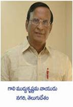

|
 MLA: Gali Muddu Krishnama Naidu
Age: 62 Date of Brith: 26 may 1947 Sex: Male Education: B.Sc., M.A., LLB. Place: Nagari Party: TDP No of times participated: 5
Gali Muddu Krishnama Naidu was born on 26th May, 1947, in Venkatramapuram village of Chittoor District to Smt & Sri G. Rama Naidu. He graduated with B.Sc and holds Masters Degree in arts along with law degree and is very well known for his services as a teacher, which actually inspired him to join the TDP party. He enjoyed the support of N. T. Rama Rao, the founder of TDP party. He is married to Smt G. Saraswathi and has two sons and a daughter.
He also held the cabinet post in the Ministry for Education, Forest and Higher Education and has a record of being elected for 5 terms to the State Assembly, a record held by him from Puttur Constituency. Apart from being a teacher he is also an agriculturist and has a special interest in book- reading.
After some differences with the TDP, he moved out of that party and contested on Congress ticket and won the election in 2004. The state of his relations with the congress too forced him to resign from that party and join his mother party TDP in 2008 and is raring to continue his winning streak in future elections too. |